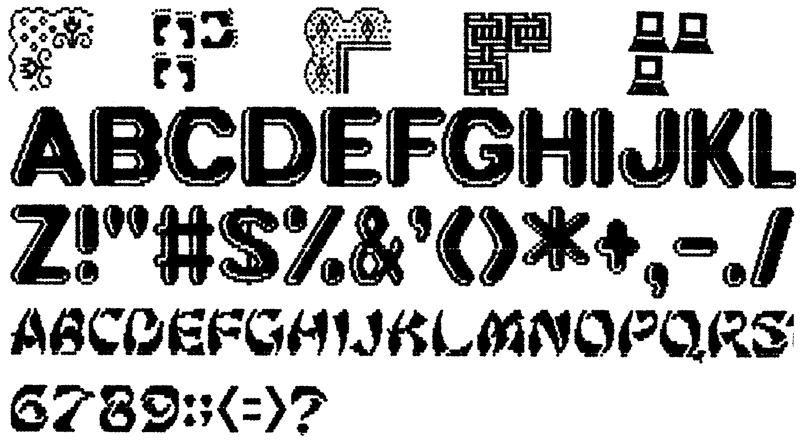
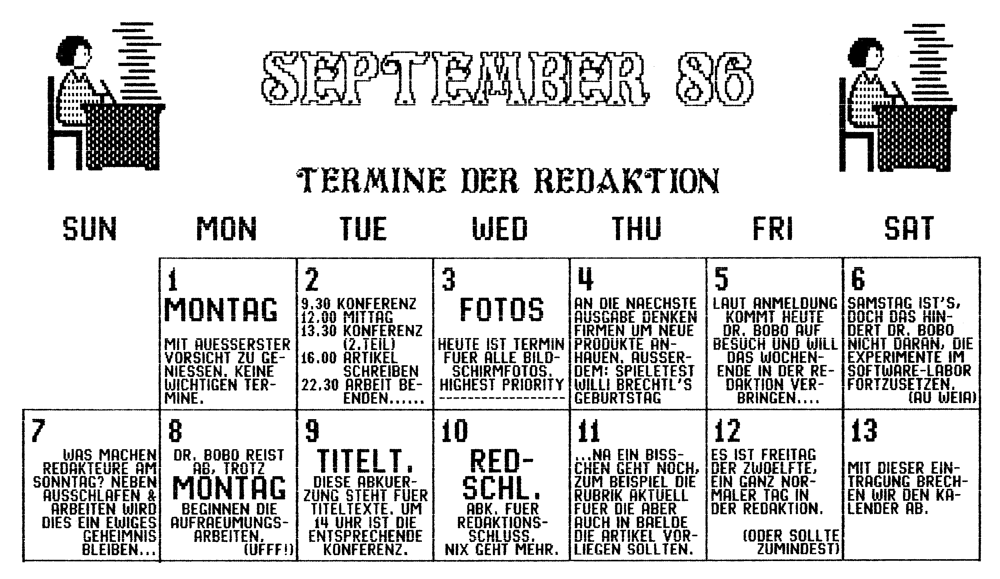
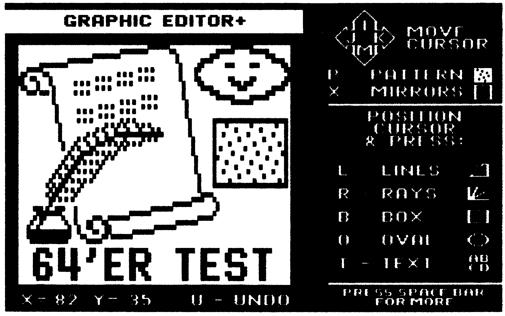
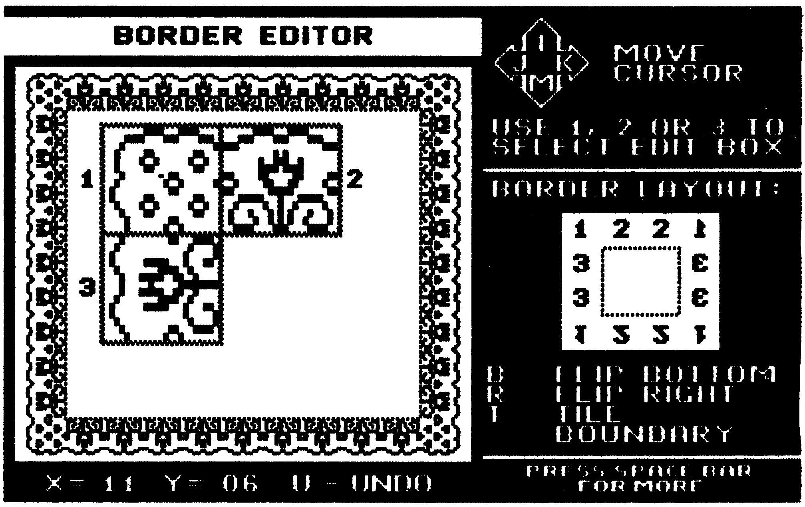
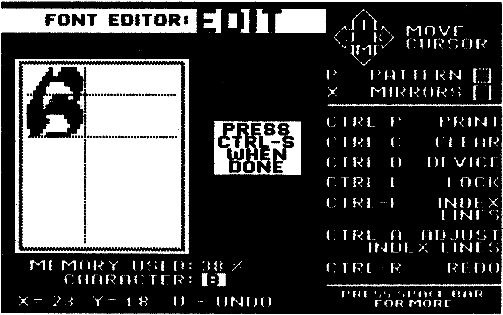

Ein Freund fürs Leben
Können Sie sich ein Programm vorstellen, das einen Freund findet? So was gibt es tatsächlich! Der Name des Freundes: Print Shop Companion
Auf dem Spielesektor ist es inzwischen schon zur Tradition geworden: Sollte ein Programm besonders erfolgreich gewesen sein, wird eine Fortsetzung produziert. Damit erhofft man sich, ein noch größeres Stück vom Software-Kuchen abschneiden zu können. Daß aber eine Fortsetzung zu einem Anwendungsprogramm kommt, ist neu. Dabei handelt es sich nicht um irgendein Anwendungsprogramm, sondern um eines der erfolgreichsten überhaupt: »The Print Shop.« Der hat nun einen Freund gefunden, der ihn bei der schweren Druckarbeit unterstützt, den »Print Shop Companion«. Das Wort Companion bedeutet übersetzt etwa Begleiter oder Gehilfe.
Eines gleich vorweg: Wer keinen Print Shop hat, kann mit dem Companion nichts anfangen. Und wer nur eine Print Shop-Raubkopie hat, wird mit dem Companion auch nicht viel anfangen können. Das hat folgenden Grund: Damit der Print Shop mit den Daten des Companion etwas anfangen kann, muß er leicht modifiziert werden. Beim ersten Start des Companion wird etwas auf die Print-Shop-Diskette geschrieben, vorher wird natürlich aber der Kopierschutz abgefragt.
Der Companion erhöht in erster Linie die Möglichkeiten des Benutzers, kreativ mit dem Print Shop zu arbeiten. Dazu gehört der Einsatz neuer Randmuster (Borders) und Zeichensätze (Fonts). Beim alten Print Shop war man auf 9 Borders und 8 Fonts beschränkt. Durch den Companion wird diese Zahl drastisch ausgeweitet: 12 weitere Fonts und gar 50 weitere Borders sind hinzugekommen. Um Ihnen einen Eindruck von neuen Zeichen und Rändern zu geben, haben wir in Bild 1 einige Beispiele zusammengestellt.

Als nächstes Plus hat sich eine neue Funktion zum Print Shop hinzugesellt: Ab sofort kann man auch Kalender drucken. Dabei hat man die Wahl zwischen Wochen- und Monatskalendern. Neben den normalen gestalterischen Möglichkeiten mit Titelzeile und Grafik hat man auch die Möglichkeit, für bestimmte Termine Texte einzutragen und mitzudrucken. Dabei hat uns überrascht, wieviel Information man für einen Tag unterbringen kann: Über hundert Buchstaben kleiner Größe haben gut lesbar Platz. So muß man sich für Termine keine unlesbaren Abkürzungen einfallen lassen. Außerdem lassen sich einzelne Zeilen auch in doppelter Größe drucken, sozusagen als Blickfang. Einen groben Eindruck eines solchen Kalenders können Sie in Bild 2 bekommen. Alles in allem ist die Kalender-Funktion die beste, die wir je gesehen haben.

Zwei weitere Funktionen stellen tausende von neuen Grafikbildern für den Print Shop zur Verfügung. Eine der faszinierendsten Möglichkeiten des Print Shop sind die Kaleidoskope, die tolle grafische Effekte auf den Bildschirm zaubern und auch als Hintergrund für Text verwendet werden können. Mit dem Companion-Programm »Tile Magic« kann man diese Kaleidoskope nun auch in kleiner Form erstellen und dann als Grafikzeichen nutzen. Gerade wenn diese aneinandergereiht werden (Tiled) ergeben sich tolle Hintergrundmuster für Glückwunschkarten und ähnliches.
Weniger nützlich sondern mehr nur Gag am Rande ist der »Creature Maker«. Zehn witzige Figuren sind gezeichnet worden, bei denen man untereinander Kopf, Körper und Füße vertauschen kann. Die neu zusammengestellten Figuren kann man dann als Grafikzeichen verwenden. Diese Option wird vielen Kindern gefallen. Der etwas »reifere« Anwender wird sicherlich auch mal damit spielen, einen praktischen Nutzen hat sie aber nicht.
Diese Funktionen sind aber eigentlich alles nur Draufgaben, denn das Wichtigste am Companion sind drei neue Editoren für Grafikzeichen (Graphics), Randmuster (Borders) und Zeichensätze (Fonts).
Wieso einen neuen Graphic-Editor? Im Print Shop war doch schon einer vorhanden. Ja, aber der neue Editor heißt nicht umsonst Graphic-Editor+ (Bild 3). Das Pluszeichen steht für eine Vielzahl von neuen Funktionen, die man eher in einem komfortablen Zeichenprogramm vermutet als in einem Graphic-Editor.

Es gibt so viele Kommandos, daß sie alle gar nicht mehr in ein Menü passen, sondern auf vier verschiedene Menüs aufgeteilt sind.
Das erste Menü zeigt die Standard-Kommandos Grafiken laden, speichern, drucken und löschen, Editor verlassen und Eingabegerät festlegen. Erlaubte Eingabegeräte sind Tastatur, Joystick und Koala-Pad.
Das zweite Menü bietet die Befehle zum Setzen und Löschen von Punkten, einfügen und löschen von Zeilen und Spalten sowie eine Fill-Funktion, die eingegrenzte Flächen mit 17 verschiedenen Mustern ausfüllen kann. Leider kann man keine eigenen Füll-Muster entwerfen. Im dritten Menü gibt es die Befehle zum Scrollen, Spiegeln und Invertieren der Grafik. Das vierte Menü schließlich enthält die Funktionen für das Zeichnen von Linien, Strahlen, Rechtecken und Ellipsen. Außerdem gibt es hier eine Textfunktion, mit der man kleine Texte in die Grafik einfügen kann. Außerhalb dieser Menüs kann man noch eine weitere Spiegelfunktion anwählen, die sich schon direkt beim Zeichnen auswirkt und schöne, symmetrische Muster zaubert. Ganz wichtig ist die letzte Funktion: Undo macht den letzten Zeichenvorgang rückgängig, so daß Fehler sehr leicht behoben werden können. Übrigens muß man sich nicht in den jeweiligen Menüs befinden, um die Kommandos anzuwählen, denn die Menüs dienen nur als Gedächtnisstütze.
Ähnlich zum Graphic-Editor+ ist der Border-Editor, (Bild 4) mit dem man seine eigenen Randmuster entwerfen kann. Ein solches Randmuster ist in drei kleine Rechtecke aufgeteilt: Oberer und unterer Rand, linker und rechter Rand sowie Ecke. Die Anordnung dieser drei Teile kann in Grenzen geändert werden.

Der letzte Editor ist schließlich der komplexeste wie aber auch der interessanteste. Im Font-Editor (Bild 5) kann man sich seine eigenen Zeichensätze erstellen. Dieser bietet bis auf einige kleine Ausnahmen alle Funktionen des Graphic-Editor+. Einige neue Funktionen sind hinzugekommen. So gibt es zwei große Hilfen bei der Konstruktion eines Zeichensatzes: Reference Fonts und Index Lines. Reference Fonts sind einfache Zeichensätze ohne jeden Schnörkel, die es dem Anwender einfacher machen, die Größenverhältnisse der einzelnen Buchstaben untereinander zu bestimmen. Ähnlich verhält es sich mit den Index Lines, die eine ideale Arbeitshilfe beim Zeichnen der einzelnen Buchstaben sind.

Leider sind dem Zeichensatz speichertechnische Grenzen gesetzt. Sind die einzelnen Zeichen zu groß und verschnörkelt, passen nicht mehr alle in den Speicher. Deswegen wird ständig angezeigt, wieviel Prozent des Speichers schon belegt sind.
Mit Details zum Erfolg
Zum Schluß des Testes seien noch einige Details am Rande erwähnt. Der Companion bringt sich einen eigenen Fast-Loader mit, der Programmteile und Grafiken mit Hypra-Load-Geschwindigkeit in den Speicher lädt. Allerdings beschleunigt dieser nur den Companion selber, die alten Print Shop-Teile werden nicht schneller geladen. Außerdem gibt es noch ein paar »Goodies« so zum Beispiel einige Grafikbilder aus bekannten Broderbund-Programmen (Choplifter, Karateka und andere). Die Bilder sind zwar nicht überwältigend gut, als kostenlose Zugabe aber ganz nett.
Der große Nachteil des Companion ist, daß jetzt die Programmteile auf zwei Disketten und damit auch zwei unabhängige Menüs verteilt sind. Außerdem kann der Companion immer noch keine Umlaute, aber findige Leute können sich einige weniger gebrauchte Satzzeichen zu den Umlauten umdefinieren. Wofür hat man denn den Font Editor? Vielleicht, aber das ist noch nicht gesichert, kommt auch eine deutsche Version des Companions auf den Markt.
Eine endgültige Wertung des Programms möchten wir noch nicht abgeben. Die extrem hohe Qualität steht völlig außer Frage, völlig unklar hingegen sind die Bezugsquelle und der Preis. Augenblicklich sind die deutschen Vertriebsrechte noch nicht vergeben. Wenn das Programm mehr als hundert Mark kosten sollte, werden viele Käufer zu Recht sauer sein, weil dann für das Gesamtpaket Print Shop und Companion über 250 Mark zu bezahlen wären. Wir werden Sie weiterhin auf dem Laufenden halten, und Ihnen berichten, wann der Companion zu welchem Preis bei wem erscheint. Sieht man aber von diesem Aspekt ab, ist der Print Shop Companion eine rundum gelungene Ergänzung zum Print Shop, die man getrost jedem Anwender empfehlen kann.
(bs)Info: Broderbund Software, 17 Paul Drive, San Rafael, CA 94903, USA.